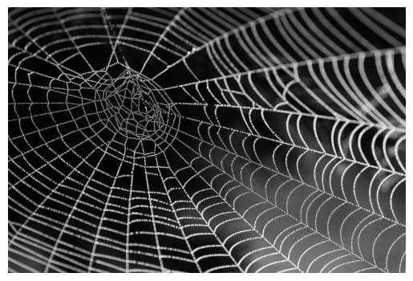

url = "https://upload.wikimedia.org/wikipedia/commons/thumb/e/ec/Mona_Lisa%2C_by_Leonardo_da_Vinci%2C_from_C2RMF_retouched.jpg/640px-Mona_Lisa%2C_by_Leonardo_da_Vinci%2C_from_C2RMF_retouched.jpg"
img = download_image(url)
xo, yo = 100, 100
img = img[:, xo : 256 + xo, yo : 256 + yo]
show_image(img.permute(1, 2, 0));Neural Style Transfer
In this module, we approach a classic AI art algorithm
Adapted from:
img.min(), img.max()(tensor(0.), tensor(1.))We can optimize the raw pixels, like any other parameter.
class DummyDataset:
"""Dataset that yields n iterations of dummy data"""
def __init__(self, n):
self.n = n
def __len__(self):
return self.n
def __getitem__(self, idx):
x, y = 0, 0
return x, y
def get_dls(n):
return DataLoaders(
splits={"train": DummyDataset(n), "test": DummyDataset(1)}, nworkers=0
)class TensorModel(nn.Module):
def __init__(self, tensor_):
super().__init__()
self.tensor_ = nn.Parameter(tensor_.clone())
def forward(self, *args, **kwargs):
return self.tensor_m = TensorModel(tensor_=torch.rand_like(img))
m().shapetorch.Size([3, 256, 256])class ImgOptCb(TrainCB):
def __init__(self, target):
self.target = target
self.intermediates = []
def predict(self, learn):
learn.preds = learn.model()
self.intermediates.append(learn.preds.clone())
def get_loss(self, learn):
learn.loss = learn.loss_func(learn.preds, self.target)def optimize_noise_to_target(noise_model, n, target, lr=0.001):
dls = get_dls(n)
img_opt_cb = ImgOptCb(target)
cbs = [img_opt_cb, ProgressCB(plot=True)]
Learner(
noise_model,
dls,
F.mse_loss,
lr=lr,
cbs=cbs,
opt_func=torch.optim.Adam,
).fit(1)
return noise_model.tensor_.clip(0, 1), img_opt_cb.intermediatesdenoise, intermediates = optimize_noise_to_target(
TensorModel(tensor_=torch.rand_like(img)),
250,
img,
lr=1e-1,
)
show_images([denoise, img])show_images([i.clip(0, 1) for i in intermediates], figsize=(6, 6))This isn’t interesting on its own, but starts to become interesting when we incorporate the pretrained feature extractors such as VGG16. This gives us a richer representation than the raw pixels that we can manipulate.
Here is a classic article on the discriminative features that these models learn.
VGG16 is similar to the pre-resnet model we implemented for FashionMNIST.

vgg16 = timm.create_model("vgg16", pretrained=True).to(def_device)vgg16VGG(
(features): Sequential(
(0): Conv2d(3, 64, kernel_size=(3, 3), stride=(1, 1), padding=(1, 1))
(1): ReLU(inplace=True)
(2): Conv2d(64, 64, kernel_size=(3, 3), stride=(1, 1), padding=(1, 1))
(3): ReLU(inplace=True)
(4): MaxPool2d(kernel_size=2, stride=2, padding=0, dilation=1, ceil_mode=False)
(5): Conv2d(64, 128, kernel_size=(3, 3), stride=(1, 1), padding=(1, 1))
(6): ReLU(inplace=True)
(7): Conv2d(128, 128, kernel_size=(3, 3), stride=(1, 1), padding=(1, 1))
(8): ReLU(inplace=True)
(9): MaxPool2d(kernel_size=2, stride=2, padding=0, dilation=1, ceil_mode=False)
(10): Conv2d(128, 256, kernel_size=(3, 3), stride=(1, 1), padding=(1, 1))
(11): ReLU(inplace=True)
(12): Conv2d(256, 256, kernel_size=(3, 3), stride=(1, 1), padding=(1, 1))
(13): ReLU(inplace=True)
(14): Conv2d(256, 256, kernel_size=(3, 3), stride=(1, 1), padding=(1, 1))
(15): ReLU(inplace=True)
(16): MaxPool2d(kernel_size=2, stride=2, padding=0, dilation=1, ceil_mode=False)
(17): Conv2d(256, 512, kernel_size=(3, 3), stride=(1, 1), padding=(1, 1))
(18): ReLU(inplace=True)
(19): Conv2d(512, 512, kernel_size=(3, 3), stride=(1, 1), padding=(1, 1))
(20): ReLU(inplace=True)
(21): Conv2d(512, 512, kernel_size=(3, 3), stride=(1, 1), padding=(1, 1))
(22): ReLU(inplace=True)
(23): MaxPool2d(kernel_size=2, stride=2, padding=0, dilation=1, ceil_mode=False)
(24): Conv2d(512, 512, kernel_size=(3, 3), stride=(1, 1), padding=(1, 1))
(25): ReLU(inplace=True)
(26): Conv2d(512, 512, kernel_size=(3, 3), stride=(1, 1), padding=(1, 1))
(27): ReLU(inplace=True)
(28): Conv2d(512, 512, kernel_size=(3, 3), stride=(1, 1), padding=(1, 1))
(29): ReLU(inplace=True)
(30): MaxPool2d(kernel_size=2, stride=2, padding=0, dilation=1, ceil_mode=False)
)
(pre_logits): ConvMlp(
(fc1): Conv2d(512, 4096, kernel_size=(7, 7), stride=(1, 1))
(act1): ReLU(inplace=True)
(drop): Dropout(p=0.0, inplace=False)
(fc2): Conv2d(4096, 4096, kernel_size=(1, 1), stride=(1, 1))
(act2): ReLU(inplace=True)
)
(head): ClassifierHead(
(global_pool): SelectAdaptivePool2d(pool_type=avg, flatten=Flatten(start_dim=1, end_dim=-1))
(drop): Dropout(p=0.0, inplace=False)
(fc): Linear(in_features=4096, out_features=1000, bias=True)
(flatten): Identity()
)
)To use VGG16, we need to normalize for each color channel with the same constants that the model was trained with.
def normalize_imagenet(img):
i = img.clone()
i -= imagenet_mean[:, None, None]
i /= imagenet_std[:, None, None]
return iimg.shapetorch.Size([3, 256, 256])nimg = normalize_imagenet(img)
show_image(nimg.clip(0, 1))We can also use the PyTorch version
show_image(pt_normalize_imagenet(img).clip(0, 1));
So, how do we use this normalized image to extract their features?
calculate_features_vgg16
calculate_features_vgg16 (vgg16, imgs, target_layers=(18, 25))
embeddings = calculate_features_vgg16(vgg16, nimg)
embeddings[0].shapetorch.Size([512, 32, 32])# Homework: Implement a hook to capture intermediate representationsWe can implement a loss function that computes the differences in feature space.
class ContentLoss:
def __init__(
self,
target_img,
target_layers=(18, 25), # out of 30
vgg=timm.create_model("vgg16", pretrained=True).to(def_device),
):
self.featurize = partial(
calculate_features_vgg16, vgg, target_layers=target_layers
)
with torch.no_grad():
self.tgt = self.featurize(target_img)
def __call__(self, img, _):
inp = self.featurize(img)
return sum(F.mse_loss(f1, f2) for f1, f2 in zip(inp, self.tgt))def optimize_features_to_target(
noise_model,
n,
target,
lr=0.001,
epochs=5,
target_layers=(18, 25),
):
intermediates = []
for _ in range(epochs):
TrainLearner(
noise_model,
get_dls(n // epochs),
ContentLoss(target, target_layers=target_layers),
lr=lr,
opt_func=torch.optim.Adam,
).fit(1)
i = noise_model.tensor_.clone().detach().clip(0, 1)
intermediates.append(i)
return intermediatesnm = TensorModel(tensor_=torch.rand_like(img))
out = [torch.rand_like(img), *optimize_features_to_target(nm, 1000, nimg, 1e-2, 8)]
show_images(out, figsize=(6, 6))nm = TensorModel(tensor_=torch.rand_like(img))
out = optimize_features_to_target(nm, 1000, nimg, 1e-2, 8, target_layers=(1,))
show_images([torch.rand_like(img), *out], figsize=(6, 6))Gram Loss
We don’t want to just transfer the spatial feature maps. We want something more abstract: style.
This is where the Gram matrix comes in. The gram matrix uses an intermediate represention, \(X\), where the magnitude of a feature basis is the row and the pixel ID in the column. By taking \(X \cdot X^T\), we get the covariance matrix of the feature activations, which we call the Gram matrix.

calculate_grams_vgg16
calculate_grams_vgg16 (vgg16, imgs, target_layers=(18, 25))
GramLoss
GramLoss (target_img, target_layers=(18, 25), vgg=VGG( (features): Sequential( (0): Conv2d(3, 64, kernel_size=(3, 3), stride=(1, 1), padding=(1, 1)) (1): ReLU(inplace=True) (2): Conv2d(64, 64, kernel_size=(3, 3), stride=(1, 1), padding=(1, 1)) (3): ReLU(inplace=True) (4): MaxPool2d(kernel_size=2, stride=2, padding=0, dilation=1, ceil_mode=False) (5): Conv2d(64, 128, kernel_size=(3, 3), stride=(1, 1), padding=(1, 1)) (6): ReLU(inplace=True) (7): Conv2d(128, 128, kernel_size=(3, 3), stride=(1, 1), padding=(1, 1)) (8): ReLU(inplace=True) (9): MaxPool2d(kernel_size=2, stride=2, padding=0, dilation=1, ceil_mode=False) (10): Conv2d(128, 256, kernel_size=(3, 3), stride=(1, 1), padding=(1, 1)) (11): ReLU(inplace=True) (12): Conv2d(256, 256, kernel_size=(3, 3), stride=(1, 1), padding=(1, 1)) (13): ReLU(inplace=True) (14): Conv2d(256, 256, kernel_size=(3, 3), stride=(1, 1), padding=(1, 1)) (15): ReLU(inplace=True) (16): MaxPool2d(kernel_size=2, stride=2, padding=0, dilation=1, ceil_mode=False) (17): Conv2d(256, 512, kernel_size=(3, 3), stride=(1, 1), padding=(1, 1)) (18): ReLU(inplace=True) (19): Conv2d(512, 512, kernel_size=(3, 3), stride=(1, 1), padding=(1, 1)) (20): ReLU(inplace=True) (21): Conv2d(512, 512, kernel_size=(3, 3), stride=(1, 1), padding=(1, 1)) (22): ReLU(inplace=True) (23): MaxPool2d(kernel_size=2, stride=2, padding=0, dilation=1, ceil_mode=False) (24): Conv2d(512, 512, kernel_size=(3, 3), stride=(1, 1), padding=(1, 1)) (25): ReLU(inplace=True) (26): Conv2d(512, 512, kernel_size=(3, 3), stride=(1, 1), padding=(1, 1)) (27): ReLU(inplace=True) (28): Conv2d(512, 512, kernel_size=(3, 3), stride=(1, 1), padding=(1, 1)) (29): ReLU(inplace=True) (30): MaxPool2d(kernel_size=2, stride=2, padding=0, dilation=1, ceil_mode=False) ) (pre_logits): ConvMlp( (fc1): Conv2d(512, 4096, kernel_size=(7, 7), stride=(1, 1)) (act1): ReLU(inplace=True) (drop): Dropout(p=0.0, inplace=False) (fc2): Conv2d(4096, 4096, kernel_size=(1, 1), stride=(1, 1)) (act2): ReLU(inplace=True) ) (head): ClassifierHead( (global_pool): SelectAdaptivePool2d(pool_type=avg, flatten=Flatten(start_dim=1, end_dim=-1)) (drop): Dropout(p=0.0, inplace=False) (fc): Linear(in_features=4096, out_features=1000, bias=True) (flatten): Identity() ) ))
Initialize self. See help(type(self)) for accurate signature.
| Type | Default | Details | |
|---|---|---|---|
| target_img | |||
| target_layers | tuple | (18, 25) | out of 30 |
| vgg | VGG | VGG( (features): Sequential( (0): Conv2d(3, 64, kernel_size=(3, 3), stride=(1, 1), padding=(1, 1)) (1): ReLU(inplace=True) (2): Conv2d(64, 64, kernel_size=(3, 3), stride=(1, 1), padding=(1, 1)) (3): ReLU(inplace=True) (4): MaxPool2d(kernel_size=2, stride=2, padding=0, dilation=1, ceil_mode=False) (5): Conv2d(64, 128, kernel_size=(3, 3), stride=(1, 1), padding=(1, 1)) (6): ReLU(inplace=True) (7): Conv2d(128, 128, kernel_size=(3, 3), stride=(1, 1), padding=(1, 1)) (8): ReLU(inplace=True) (9): MaxPool2d(kernel_size=2, stride=2, padding=0, dilation=1, ceil_mode=False) (10): Conv2d(128, 256, kernel_size=(3, 3), stride=(1, 1), padding=(1, 1)) (11): ReLU(inplace=True) (12): Conv2d(256, 256, kernel_size=(3, 3), stride=(1, 1), padding=(1, 1)) (13): ReLU(inplace=True) (14): Conv2d(256, 256, kernel_size=(3, 3), stride=(1, 1), padding=(1, 1)) (15): ReLU(inplace=True) (16): MaxPool2d(kernel_size=2, stride=2, padding=0, dilation=1, ceil_mode=False) (17): Conv2d(256, 512, kernel_size=(3, 3), stride=(1, 1), padding=(1, 1)) (18): ReLU(inplace=True) (19): Conv2d(512, 512, kernel_size=(3, 3), stride=(1, 1), padding=(1, 1)) (20): ReLU(inplace=True) (21): Conv2d(512, 512, kernel_size=(3, 3), stride=(1, 1), padding=(1, 1)) (22): ReLU(inplace=True) (23): MaxPool2d(kernel_size=2, stride=2, padding=0, dilation=1, ceil_mode=False) (24): Conv2d(512, 512, kernel_size=(3, 3), stride=(1, 1), padding=(1, 1)) (25): ReLU(inplace=True) (26): Conv2d(512, 512, kernel_size=(3, 3), stride=(1, 1), padding=(1, 1)) (27): ReLU(inplace=True) (28): Conv2d(512, 512, kernel_size=(3, 3), stride=(1, 1), padding=(1, 1)) (29): ReLU(inplace=True) (30): MaxPool2d(kernel_size=2, stride=2, padding=0, dilation=1, ceil_mode=False) ) (pre_logits): ConvMlp( (fc1): Conv2d(512, 4096, kernel_size=(7, 7), stride=(1, 1)) (act1): ReLU(inplace=True) (drop): Dropout(p=0.0, inplace=False) (fc2): Conv2d(4096, 4096, kernel_size=(1, 1), stride=(1, 1)) (act2): ReLU(inplace=True) ) (head): ClassifierHead( (global_pool): SelectAdaptivePool2d(pool_type=avg, flatten=Flatten(start_dim=1, end_dim=-1)) (drop): Dropout(p=0.0, inplace=False) (fc): Linear(in_features=4096, out_features=1000, bias=True) (flatten): Identity() ) ) |
def optimize_gram_to_target(
noise_model,
n,
target,
lr=0.001,
epochs=5,
target_layers=(18, 25),
):
intermediates = []
for _ in range(epochs):
TrainLearner(
noise_model,
get_dls(n // epochs),
GramLoss(target, target_layers=target_layers),
lr=lr,
opt_func=torch.optim.Adam,
).fit(1)
i = noise_model.tensor_.clone().detach().clip(0, 1)
intermediates.append(i)
return intermediatesspider_web = "https://insideecology.com/wp-content/uploads/2018/06/spider-web-with-water-beads-921039_1280-810x540.jpg"
show_image(download_image(spider_web))
def style_transfer(from_, to_):
if isinstance(from_, str):
from_ = pt_normalize_imagenet(download_image(from_))
if isinstance(to_, str):
to_ = pt_normalize_imagenet(download_image(to_))
nm = TensorModel(tensor_=from_)
return optimize_gram_to_target(nm, 2000, to_, 0.1, 9, target_layers=(2, 18, 25))
show_images(style_transfer(nimg, spider_web), figsize=(6, 6))starry_night = "https://sanctuarymentalhealth.org/wp-content/uploads/2021/03/The-Starry-Night-1200x630-1-979x514.jpg"
show_image(download_image(starry_night))
show_images(style_transfer(nimg, starry_night), figsize=(6, 6))Using the features from pretrained networks can be powerful.